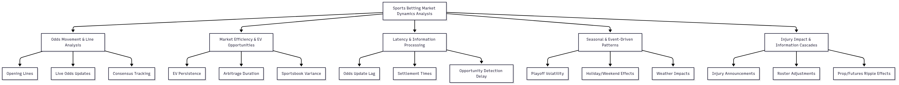

Introduction
Exploring Prediction Markets Through Sports Betting and Financial Time Series
Prediction markets aggregate information into prices that reflect collective forecasts of future events. Sports betting is one of the most active and transparent prediction markets, with odds functioning as “prices” on game outcomes. Like stocks or options, these odds respond dynamically to new information—injuries, weather, sharp bettor activity—and often exhibit predictable volatility and seasonality.
In recent years, the legalization and digitization of sports betting has transformed it into a multi-billion-dollar industry, creating a live laboratory for studying market efficiency, volatility clustering, and information flow. Data providers such as Sportradar now offer real-time feeds of odds, play-by-play data, and settlements, enabling precise measurement of how betting markets process information. At the same time, the growth of publicly traded sportsbook companies (e.g., DraftKings, Caesars, Flutter) has created a direct connection between prediction markets and the financial markets, as investor sentiment and equity valuations reflect underlying betting dynamics.
This project analyzes sports betting markets as financial time series, applying models such as ARIMA, GARCH, VAR, and LSTM. By pairing Sportradar odds with sportsbook equity data, it seeks to demonstrate how sports betting operates as a structured prediction market, with implications for both bettors and financial market participants.
The Big Picture
Central Question:
How do sports prediction markets exhibit seasonality, volatility, and inefficiency, and how are these dynamics tied to broader financial markets?

Analytical Angles:
- Odds Movements & Line Dynamics (Sportradar odds)
- Opening vs live odds, consensus shifts, line velocity.
- Insights into how quickly prediction markets absorb information.
- Market Efficiency & Volatility Clustering (Sportradar odds + GARCH models)
- Measuring persistence of arbitrage opportunities and EV (expected value) windows.
- Volatility spikes during high-stakes events.
- Latency & Information Flow (Sportradar timestamps)
- Time lag from injury news → odds adjustment → settlement.
- Operational inefficiencies in prediction markets.
- Financial Spillovers (Equities/ETF data)
- DraftKings/Betting ETF returns and volatility.
- How sportsbook equities mirror prediction market shocks.
This framework provides a structured view of prediction markets as financial ecosystems, connecting micro-level betting markets with macro-level financial instruments.
Literature Review
Research on sports betting markets highlights both efficiency and areas of exploitable inefficiency. Early foundational work established that while wagering markets tend to be broadly efficient, they can deviate under certain conditions1. Subsequent studies built on this, showing that efficiency can vary significantly depending on the sport, bet type, or market segment2 3.
One stream of research has focused on information and efficiency. Evidence shows that markets usually process information effectively, but inefficiencies emerge when new information—such as injury announcements or sharp bettor activity—causes temporary delays in adjustment4. Line movement studies demonstrate that odds shifts often carry predictive power, suggesting that not all information is immediately absorbed5.
Another important perspective examines odds movements and market behavior. Analyses of line adjustments indicate that markets respond quickly but not instantaneously, leaving short-lived opportunities for expected value capture4. The dynamics of how odds move over time provide insight into the underlying mechanisms of information flow, sentiment, and market corrections5.
Together, these works confirm that while sports betting markets approximate efficiency, inefficiencies exist in predictable patterns3. What remains less explored is the temporal persistence of these inefficiencies and the role of latency in whether bettors or systems can capture them—precisely the gap this project addresses with time series analysis of SportsRadar data.
Guiding Questions
- How do sports odds behave as financial time series?
- What seasonal or cyclical patterns emerge in odds and equity prices?
- How quickly do odds incorporate new information?
- How persistent are arbitrage/EV opportunities
- What role does latency play in market efficiency?
- Do odds exhibit volatility clustering similar to equities?
- How do COVID and major shocks affect both odds and equity markets?
- Are there consistent day-of-week or playoff-related volatility effects?
- How correlated are betting market inefficiencies with sportsbook stock returns?
- What forecasting models (ARIMA, GARCH, LSTM) best capture prediction market behavior?
Main Reference: Gamage, P. (2026). Applied Time Series for Data Science